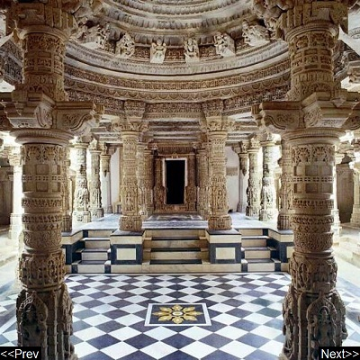

|  |
|
Delwara temples The Jain Delwara temples of India are located about 2.5 kilometres from Mount Abu, Rajasthan's only hill station. These temples built by Vastupal Tejpal between the 11th and 13th centuries AD are world famous for their stunning use of marble. Address: Dilwara Rd, Delwara, Mt Abu, Rajasthan 307501 Hours: Open today · 12:00–5:00 pm |